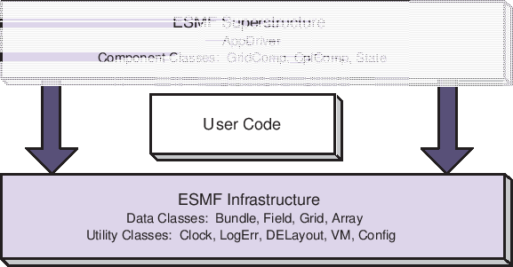

Next: 2 Command Line Tools Up: ESMC_crefdoc Previous: Contents Contents
The Earth System Modeling Framework (ESMF) is a suite of software tools for developing high-performance, multi-component Earth science modeling applications. Such applications may include a few or dozens of components representing atmospheric, oceanic, terrestrial, or other physical domains, and their constituent processes (dynamical, chemical, biological, etc.). Often these components are developed by different groups independently, and must be “coupled” together using software that transfers and transforms data among the components in order to form functional simulations.
ESMF supports the development of these complex applications in a number of ways. It introduces a set of simple, consistent component interfaces that apply to all types of components, including couplers themselves. These interfaces expose in an obvious way the inputs and outputs of each component. It offers a variety of data structures for transferring data between components, and libraries for regridding, time advancement, and other common modeling functions. Finally, it provides a growing set of tools for using metadata to describe components and their input and output fields. This capability is important because components that are self-describing can be integrated more easily into automated workflows, model and dataset distribution and analysis portals, and other emerging “semantically enabled” computational environments.
ESMF is not a single Earth system model into which all components must fit, and its distribution doesn't contain any scientific code. Rather it provides a way of structuring components so that they can be used in many different user-written applications and contexts with minimal code modification, and so they can be coupled together in new configurations with relative ease. The idea is to create many components across a broad community, and so to encourage new collaborations and combinations.
ESMF offers the flexibility needed by this diverse user base. It is tested nightly on more than two dozen platform/compiler combinations; can be run on one processor or thousands; supports shared and distributed memory programming models and a hybrid model; can run components sequentially (on all the same processors) or concurrently (on mutually exclusive processors); and supports single executable or multiple executable modes.
ESMF's generality and breadth of function can make it daunting for the novice user. To help users navigate the software, we try to apply consistent names and behavior throughout and to provide many examples. The large-scale structure of the software is straightforward. The utilities and data structures for building modeling components are called the ESMF infrastructure. The coupling interfaces and drivers are called the superstructure. User code sits between these two layers, making calls to the infrastructure libraries underneath and being scheduled and synchronized by the superstructure above. The configuration resembles a sandwich, as shown in Figure 1.
ESMF users may choose to extensively rewrite their codes to take advantage of the ESMF infrastructure, or they may decide to simply wrap their components in the ESMF superstructure in order to utilize framework coupling services. Either way, we encourage users to contact our support team if questions arise about how to best use the software, or how to structure their application. ESMF is more than software; it's a group of people dedicated to realizing the vision of a collaborative model development community that spans institutional and national bounds.
ESMF has a complete set of Fortran interfaces and some C interfaces. This ESMF Reference Manual is a listing of ESMF interfaces for C.
Interfaces are grouped by class. A class is comprised of the data and methods for a specific concept like a physical field. Superstructure classes are listed first in this Manual, followed by infrastructure classes.
The major classes in the ESMF superstructure are Components, which usually represent large pieces of functionality such as atmosphere and ocean models, and States, which are the data structures used to transfer data between Components. There are both data structures and utilities in the ESMF infrastructure. Data structures include multi-dimensional Arrays, Fields that are comprised of an Array and a Grid, and collections of Arrays and Fields called ArrayBundles and FieldBundles, respectively. There are utility libraries for data decomposition and communications, time management, logging and error handling, and application configuration.
|  |
The website, http://www.earthsystemmodeling.org, provide more information of the ESMF project as a whole. The website includes release notes and known bugs for each version of the framework, supported platforms, project history, values, and metrics, related projects, the ESMF management structure, and more. The ESMF User's Guide contains build and installation instructions, an overview of the ESMF system and a description of how its classes interrelate (this version of the document corresponds to the last public version of the framework). Also available on the ESMF website is the ESMF Developer's Guide that details ESMF procedures and conventions.
The ESMF Application Programming Interface (API) is based on the object-oriented programming concept of a class. A class is a software construct that is used for grouping a set of related variables together with the subroutines and functions that operate on them. We use classes in ESMF because they help to organize the code, and often make it easier to maintain and understand. A particular instance of a class is called an object. For example, Field is an ESMF class. An actual Field called temperature is an object. That is about as far as we will go into software engineering terminology.
The C interface is implemented so that the variables associated with a class are stored in a C structure. For example, an ESMC_Field structure stores the data array, grid information, and metadata associated with a physical field. The structure for each class is defined in a C header file. The operations associated with each class are also defined in the header files.
The header files for ESMF are bundled together and can be accessed with a single include statement, #include "ESMC.h". By convention, the C entry points are named using “ESMC” as a prefix.
ESMF defines a set of standard methods and interface rules that hold across the entire API. These are:
The ESMF contains two types of classes.
Deep classes require ESMC_<Class>Create() and ESMC_<Class>Destroy() calls. They involve memory allocation, take significant time to set up (due to memory management) and should not be created in a time-critical portion of code. Deep objects persist even after the method in which they were created has returned. Most classes in ESMF, including GridComp, CplComp, State, Fields, FieldBundles, Arrays, ArrayBundles, Grids, and Clocks, fall into this category.
Shallow classes do not possess ESMC_<Class>Create() and ESMC_<Class>Destroy() calls. They are simply declared and their values set using an ESMC_<Class>Set() call. Examples of shallow classes are Time, TimeInterval, and ArraySpec. Shallow classes do not take long to set up and can be declared and set within a time-critical code segment. Shallow objects stop existing when the method in which they were declared has returned.
An exception to this is when a shallow object, such as a Time, is stored in a deep object such as a Clock. The Clock then carries a copy of the Time in persistent memory. The Time is deallocated with the ESMC_ClockDestroy() call.
See Section 8, Overall Design and Implementation Notes, for a brief discussion of deep and shallow classes from an implementation perspective. For an in-depth look at the design and inter-language issues related to deep and shallow classes, see the ESMF Implementation Report.
The following are special methods which, in one case, are required by any application using ESMF, and in the other case must be called by any application that is using ESMF Components.
The ESMF API is organized around a hierarchy of classes that contain model data. The operations that are performed on model data, such as regridding, redistribution, and halo updates, are methods of these classes.
The main data classes offered by the ESMF C API, in order of increasing complexity, are:
Underlying these data classes are native language arrays. ESMF Arrays and Fields can be queried for the C pointer to the actual data. You can perform communication operations either on the ESMF data objects or directly on C arrays through the VM class, which serves as a unifying wrapper for distributed and shared memory communication libraries.
Like the hierarchy of model data classes, ranging from the simple to the complex, ESMF is organized around a hierarchy of classes that represent different spaces associated with a computation. Each of these spaces can be manipulated, in order to give the user control over how a computation is executed. For Earth system models, this hierarchy starts with the address space associated with the computer and extends to the physical region described by the application. The main spatial classes in ESMF, from those closest to the machine to those closest to the application, are:
The current ESMF C API does not provide user access to the DELayout class.
In order to define how the index spaces of the spatial classes relate to each other, we require either implicit rules (in which case the relationship between spaces is defined by default), or special Map arrays that allow the user to specify the desired association. The form of the specification is usually that the position of the array element carries information about the first object, and the value of the array element carries information about the second object. ESMF includes a distGridToArrayMap, a gridToFieldMap, a distGridToGridMap, and others.
It can be useful to make small packets of descriptive parameters. ESMF has one of these:
There are a number of utilities in ESMF that can be used independently. These are:
Depending on the requirements of the application, the user may want to begin integrating ESMF in either a top-down or bottom-up manner. In the top-down approach, tools at the superstructure level are used to help reorganize and structure the interactions among large-scale components in the application. It is appropriate when interoperability is a primary concern; for example, when several different versions or implementations of components are going to be swapped in, or a particular component is going to be used in multiple contexts. Another reason for deciding on a top-down approach is that the application contains legacy code that for some reason (e.g., intertwined functions, very large, highly performance-tuned, resource limitations) there is little motivation to fully restructure. The superstructure can usually be incorporated into such applications in a way that is non-intrusive.
In the bottom-up approach, the user selects desired utilities (data communications, calendar management, performance profiling, logging and error handling, etc.) from the ESMF infrastructure and either writes new code using them, introduces them into existing code, or replaces the functionality in existing code with them. This makes sense when maximizing code reuse and minimizing maintenance costs is a goal. There may be a specific need for functionality or the component writer may be starting from scratch. The calendar management utility is a popular place to start.
The following is a typical set of steps involved in adopting the ESMF superstructure. The first two tasks, which occur before an ESMF call is ever made, have the potential to be the most difficult and time-consuming. They are the work of splitting an application into components and ensuring that each component has well-defined stages of execution. ESMF aside, this sort of code structure helps to promote application clarity and maintainability, and the effort put into it is likely to be a good investment.
Named constants are used throughout ESMF to specify the values of many arguments with multiple well defined values in a consistent way. These constants are defined by a derived type that follows this pattern:
ESMF_<CONSTANT_NAME>_Flag
The values of the constant are then specified by this pattern:
ESMF_<CONSTANT_NAME>_<VALUE1> ESMF_<CONSTANT_NAME>_<VALUE2> ESMF_<CONSTANT_NAME>_<VALUE3> ...
A master list of all available constants can be found in section 33.
ESMF data objects such as Fields are distributed over DEs, with each DE getting a portion of the data. Depending on the task, a local or global view of the object may be preferable. In a local view, data indices start with the first element on the DE and end with the last element on the same DE. In a global view, there is an assumed or specified order to the set of DEs over which the object is distributed. Data indices start with the first element on the first DE, and continue across all the elements in the sequence of DEs. The last data index represents the number of elements in the entire object. The DistGrid provides the mapping between local and global data indices.
The convention in ESMF is that entities with a global view have no prefix. Entities with a DE-local (and in some cases, PET-local) view have the prefix “local.”
Just as data is distributed over DEs, DEs themselves can be distributed over PETs. This is an advanced feature for users who would like to create multiple local chunks of data, for algorithmic or performance reasons. Local DEs are those DEs that are located on the local PET. Local DE labeling always starts at 0 and goes to localDeCount-1, where localDeCount is the number of DEs on the local PET. Global DE numbers also start at 0 and go to deCount-1. The DELayout class provides the mapping between local and global DE numbers.
The basic rule of allocation and deallocation for the ESMF is: whoever allocates it is responsible for deallocating it.
ESMF methods that allocate their own space for data will deallocate that space when the object is destroyed. Methods which accept a user-allocated buffer, for example ESMC_FieldCreate() with the ESMF_DATACOPY_REFERENCE flag, will not deallocate that buffer at the time the object is destroyed. The user must deallocate the buffer when all use of it is complete.
Classes such as Fields, FieldBundles, and States may have Arrays, Fields, Grids and FieldBundles created externally and associated with them. These associated items are not destroyed along with the rest of the data object since it is possible for the items to be added to more than one data object at a time (e.g. the same Grid could be part of many Fields). It is the user's responsibility to delete these items when the last use of them is done.
The equal sign assignment has not been overloaded in ESMF, thus resulting in the standard C behavior. This behavior has been documented as the first entry in the API documentation section for each ESMF class. For deep ESMF objects the assignment results in setting an alias the the same ESMF object in memory. For shallow ESMF objects the assignment is essentially a equivalent to a copy of the object. For deep classes the equality operators have been overloaded to test for the alias condition as a counter part to the assignment behavior. This and the not equal operator are documented following the assignment in the class API documentation sections.
Deep object copies are implemented as a special variant of the ESMC_<Class>Create() methods. It takes an existing deep object as one of the required arguments. At this point not all deep classes have ESMC_<Class>Create() methods that allow object copy.
Due to the complexity of deep classes there are many aspects when comparing two objects of the same class. ESMF provide ESMC_<Class>Match() methods, which are functions that return a class specific match flag. At this point not all deep classes have ESMC_<Class>Match() methods that allow deep object comparison.